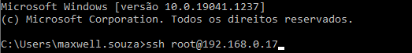

◉ Conectando em um servidor via SSH
O que é SSH?
Bom, para entendermos melhor o conceito de SSH vale fazermos a separação dos termos Secure e Shell.
Secure: representa a segurança na conexão SSH com o servidor que é criptografada, ou seja, qualquer dado interceptado em uma conexão SSH
será ilegível e somente o servidor a qual você está conectando terá como descriptografar a mensagem.
Shell: basicamente é uma interface de usuário, para acessar os serviços de um sistema operacional. O Shell tem uma biblioteca de comandos
e o usuário que tiver conhecimento desses comandos pode fazer várias ações no sistema, desde coisas simples como: criar diretórios,
compactar e mover arquivos. Até coisas mais complexas, como: visualizar processos, criar scripts, criar comandos, etc.
1 - Primeiro, abra o terminal de sua preferência, nesse caso utilizarei o próprio Prompt de Comando que já vem instalado no Windows.
2 - Após acessar o terminal, digite o seguinte comando:
$ ssh [USUARIO]@[IP-DO-SERVIDOR]
Substitua os termos da seguinte forma:
[USUARIO] – usuário da conta cPanel a ser acessada. Caso você deseje conectar como root, inserir root.
[IP-DO-SERVIDOR] – IP do servidor, seria algo como 123.45.67.89, caso saiba de um domínio que esteja apontado para o servidor da hospedagem,
pode utilizar também o domínio como parâmetro aqui. Ex: ssh root@dominio-principal.com.br
Após preencher com seus dados, dê um enter e se estiver tudo certo, deverá seguir como o exemplo abaixo:

3 - Se for sua primeira conexão, o servidor deve retornar uma mensagem semelhante a essa:
The authenticity of host '162.214.163.227 (162.214.163.227)' can't be established.
ECDSA key fingerprint is SHA256:0CQ6B6xGGPiFJptvy7aeDazIma9wju5geICStT4GPMs.
Are you sure you want to continue connecting (yes/no/[fingerprint])?
Digite yes e tecle Enter. Deve aparecer a seguinte mensagem:
root@162.214.163.227's password:
4 - Insira a senha da conta cPanel que você esta tentando acessar, ou em caso de estar acessando como root, inserir a senha do root.
Nesse momento tudo que você digitar não irá gerar nenhum carácter por motivos de segurança. Após inserir a senha tecle Enter.
5 - Pronto! Se inseriu tudo corretamente, você terá conseguido se conectar com sucesso ao terminal do servidor.